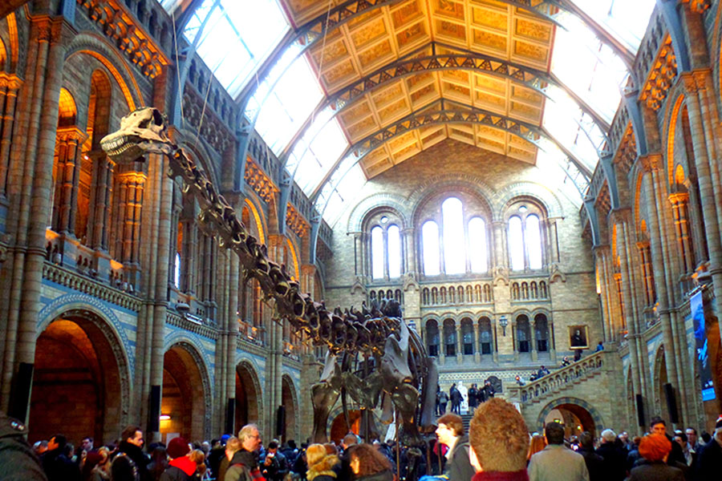

Pintado por Michelangelo Buonarotti por volta de 1511, a obra “Criação de Adão” que fica no teto da Capela Sistina é um dos principais motivos que faz a Capela Sistina entrar nessa lista. A cena representa um episódio do Livro do Gênesis no qual Deus cria o primeiro homem. Além dessa icônica obra, outros artistas renascentistas como Botticelli, Perugino e Rosselli completam a decoração com passagens bíblicas pintadas na capela a transformando em uma verdadeira galeria de arte.
2 - Museu do vaticano, Roma
Localizada em South Kensington, o Museu de História Natural de Londres é o mais popular da Europa nessa categoria, tendo em sua coleção mais de 70 milhões de itens, incluindo espécimes coletados por Charles Darwin e uma imensa área dedicada a pré-história como vários fósseis e esqueletos de dinossauro, a minha parte favorita do museu.